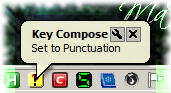
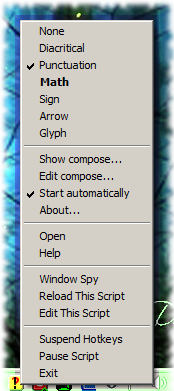
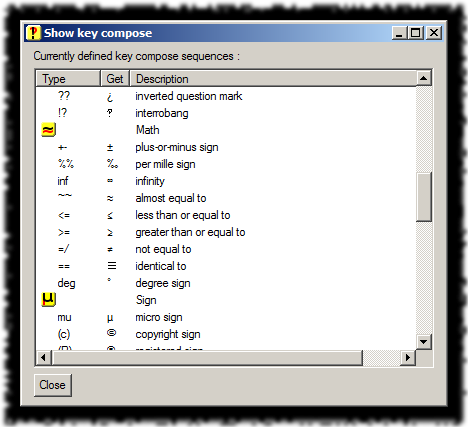

Key Compose
All started with Alex Benenson’s great extension for Firefox, Transliterator. With that writing letters with diacritical marks became fast and easy.
When I met AutoHotkey, my first question was, could I write something similar to Transliterator, but not limited to the browser ? Well, I think yes.
Screenshot

Usage
Once started, KeyCompose just sits in the system tray and waits. Then when you type a key sequence for which a replacement was set, it does its job.
There can be more modes defined and you can change between them :
| Action | Change |
|---|---|
| Alt-Ctrl-F2 | next mode |
| Alt-Ctrl-Shift-F2 | previous mode |
| double-click on the tray icon | next mode |
| click on a mode name in the context menu | that mode |
To cancel a replacement, press Shift-Shift before finishing the triggering sequence. ( I mean, press both Shift keys simultaneously. )
Context menu
menu

In the top part of the context menu there are enumerated the currently defined modes. ( The one with the checkmark is the active one, the one in bold is the mode to which you can change by double-clicking the tray icon. )
The other command, below the list of modes :
-
Show compose… – displays the list of modes and hotstring definitions for each
Show key compose

- Edit compose… – opens the KeyCompose-conf.ahk file in the associated editor
- Start automatically – creates or deletes a shortcut to itself in the Startup menu
- About… – displays information about itself
Configuration
Sadly the hotstring definition in AutoHotkey accepts only barewords, no variables. So the configuration must be an AutoHotkey script itself.
Anyway, I tried to reduce its format to the minimum, so the configuration not requires programmer skills. Things to keep in mind :
;starts a comment – comments are ignored to the end of their line#If compose==numberstarts a mode definition – the following lines until the next similar#Ifwill pertain to that mode::sequence::characterdefines a hotstring – each replacement in a separate line
And some explanations on the syntax elements :
- The number is the order number of the mode. Not really meaningful, just keep the numbering continuous, starting from 0.
- The sequence is the list of keys that needs to be pressed one after the other to trigger the replacement.
- The character in this case will be the character to replace with, but actually can be longer string too.
file fragment - KeyCompose-conf.ahk
; Key Compose version 0.2 february 2013 written by Fehérke
; key compose functionality and more
; configuration file
#If compose==0 ; None
#If compose>=1 ; Diacritical
::a'::á ; a with acute
::a`::à ; a with grave
::a^::â ; a with circumflex
::a;::ä ; a with diaeresis
::a~::ã ; a with tilde
::ae::æ ; ae
The configuration file is also read by KeyCompose to display the definitions in the Show key compose. So better do not add more complex expressions, even if you know AutoHotkey.
With the configuration shipped with the script there are some particularities :
- The first mode has no hotstring definition, so it actually turns off the functionality. You may add definitions there too, if you want.
- The definitions are cumulative : when mode n is active, all definitions of
modes 0..n are available. To change this to restrict each mode to its own
definitions only, replace the
>=operators to==in the#Ifdirectives.
Versions
- 0.0 - February 2013
- Initial release.
- 0.1 - February 2013
- Separated the hotstring list into 3 modes : None, Primary, Secondary.
- Key Ctrl-F2 to change the mode.
- 0.2 - February 2013
- Moved the hotstring definitions into a configuration file.
- New menu command Edit compose….
- Key Alt-Ctrl-F2 to change the mode.
- Key Alt-Ctrl-Shift-F2 to change the mode backward.
- 0.3 - July 2013
- Key Shift-Shift to cancel a compose.
Plans
- A configuration editor combined with CharMap.exe would be great.
Download
You can find the related files on GitHub in my AutoHotkey-script repository’s key-compose directory :
- KeyCompose.ahk - script
- KeyCompose-conf.ahk - settings
- KeyCompose-0.ico - image
- KeyCompose-1.ico - image
- KeyCompose-2.ico - image
- KeyCompose-3.ico - image
- KeyCompose-4.ico - image
- KeyCompose-5.ico - image
- KeyCompose-6.ico - image